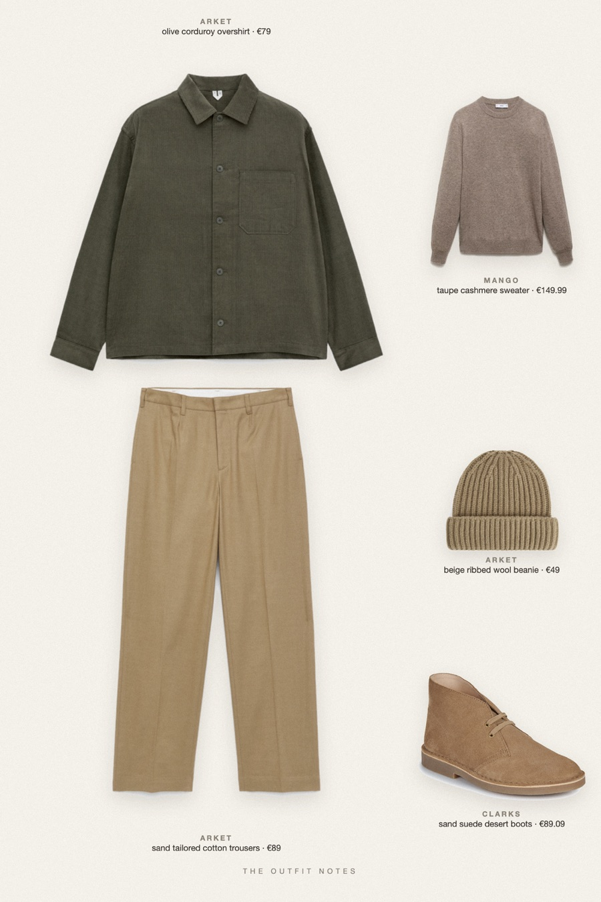
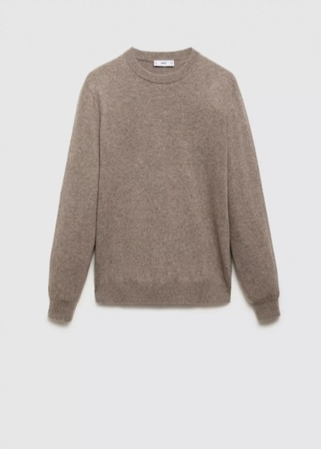

Brick Street Olive
cord overshirt, taupe knit

Smart casual outfit for men in fall: an olive corduroy overshirt layered over a taupe cashmere sweater, sand tailored cotton trousers and Clarks suede desert boots, with a ribbed beige beanie. A relaxed weekend city look in earthy tones that stays clean and easy to copy.
The pieces
This page contains affiliate links: if you buy through them, we may earn a commission at no extra cost to you. Disclosure.
 ARKET
ARKET
Olive corduroy overshirt
Shop
Mango
Taupe cashmere sweater
Shop ARKET
ARKET
Sand tailored cotton trousers
Shop Clarks
Clarks
Sand suede desert boots
Shop ARKET
ARKET
Beige ribbed wool beanie
Shop
Prices are indicative, taken when the look was published, and may have changed. Pictures of the outfit are AI-generated illustrations of real products; the product photos are the retailers' own.
Published 1 October 2026.